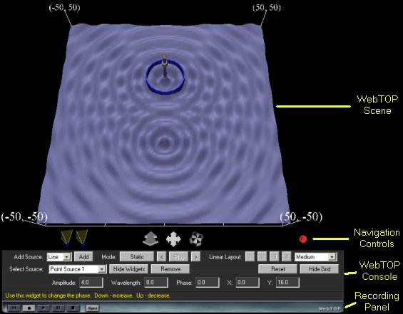
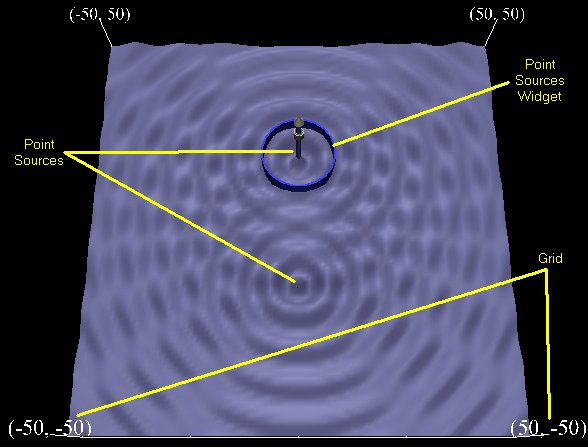
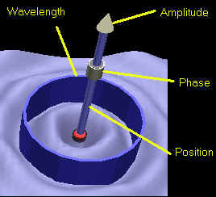
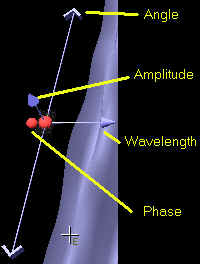

Waves: Directions
Under normal operation, your WebTOP window should look like the following:

The WebTOP window has four parts. The top portion is the active WebTOP scene.
The second portion is the VRML Navigation controls.
The third portion, the console, contains a message line that provides help on the operation of the Widgets and keyboard entry boxes.
The fourth portion is the recording panel that allows you to record and replay WebTOP sessions. You may scroll down to read on, or
select the appropriate link from the following items:
How To Change Parameters
When you start the module, you should see a figure similar to this:

The parameters that you can change are the number of sources,
the wavelength of the wave produced by each of the sources,
the phase of the wave produced by each of the sources and the position of
each of the sources. These parameters can be changed
by manipulating
the provided widgets and by using the WebTOP
console. The console also allows you to hide/show the widgets and the
Grid. You may view the animation is Static mode
(the default) and use the forward '>' and backward '<' buttons to step forward or backward in time or Animation mode.
Module
Widgets:
This module includes two types of
widgets, for point sources and for line sources:
|  |
 |
| Point Source Widgets |
Line Source Widgets |
To change a parameter, you need to position your cursor over the proper
widget. Labels on the widget figures, shown above, identify each of the widgets. Once you have placed the cursor over the widget, the cursor changes shape.
If you click on the left mouse button, a message explaining the operation
of the widget appears at the help portion of the module console.
Selecting a Widget:
Position the cursor over a source to activate its widgets. If this
fails to work, use the WebTOP controls and select the source from the provided
pull down menu. You may also need to toggle the Show Widgets button. We advise that you manipulate the Widgets while the module
is in static mode. You might need to use the forward '>' and
backward '<' buttons to access some of the widgets.
Changing the Wave Amplitude:
Once you select the widget, drag the cursor up to increase the
amplitude and down to decrease it. The operation of this widget is the same
for both types of sources.
Changing the Phase of the Wave:
For point sources, once you select the widget, drag the cursor
down to increase the phase and up to decrease it. Allowable phase values are
from 0 to 180 degrees.
For line sources, once you select the widget, drag the cursor outward to
increase the phase and inward to decrease it.
Changing the Wavelength of the Source:
For the point source, once you select the widget, drag the cursor
outward to increase the wavelength and towards the center of the source to
decrease it.
For line sources, drag the arrow outward (from the widget controls) to
increase the wavelength and inward to decrease it.
Changing the Position of the Source:
This widget is available only for point sources. Once you select the
widget, drag the cursor towards the position you want to move the source to.
Changing the Angle of the Source:
This widget is available only for line sources. Once you select the
widget, rotate it left of right to get to the desired angle.
Using the
WebTOP Console:
You may use the WebTOP console to change source parameters and to
control the scene. You may change the parameters of a particular source by
selecting the source (Select Source pull down menu) and by typing the values in the "Input
Boxes". You need to press the enter key after you change each of the
parameters. As shown in the following Figure, the parameters input boxes are
available at the bottom of the control panel just above the context sensitive
help. Note that the panel is context sensitive; the parameters shown are those
corresponding to the last source selected.
Linear Layouts:
When using Line Sources the module allows you to position the Line
Source widgets in four possible layouts. These layouts were chosen to help you
manipulate the widgets easier. You may select the layout by pressing the number
corresponding to the layout.
|